දඟපන්දු යැවීමේ කලාවේ ඇති මූලික සහ අතිශය බලපෑම් සහගත පන්දු යැවීමේ ක්රමවේදයකි. දකුණත් පිතිකරුවෙකුට එරෙහිව অফ්-ස්ටම්ප් එකෙන් පිටත පතිත වන පන්දුව, පිතිකරුවාගේ ශරීරය හෝ කඩුල්ල දෙසට භ්රමණය වෙමින් (Turning from off to leg) පැමිණීම මෙහිදී සිදුවේ. මැණික් කටුවේ සහ මැද ඇඟිල්ලේ (Index & Middle finger) ප්රබල භාවිතයෙන් පන්දුවට ඉහළ භ්රමණයක් (RPM) ලබා දීම මෙහි ප්රධාන තාක්ෂණය වේ.
ජාත්යන්තර තාක්ෂණික පියවර (Technical Execution)
1.
පන්දු ග්රහණය සහ අත් පිහිටීම (Grip & Seam Position):
පන්දුවේ මැහුම (Seam) මාපටැඟිල්ලට සහ අනෙකුත් ඇඟිලිවලට හරස් අතට තබා, දබරැඟිල්ල සහ මැදැඟිල්ල අතරින් පන්දුව තදින් අල්ලා ගත යුතුය.
2.
පන්දු යැවීමේ ක්රියාකාරිත්වය සහ අත නිකුත් කිරීම (Action & Release):
පන්දුව නිකුත් කරන මොහොතේ අත කනට සමීපව ඉහළින් ගෙන ගොස්, මැණික් කටුව සහ මැදැඟිල්ල මඟින් පන්දුවට පිටත සිට ඇතුළට තදබල තරස්/සිරස් භ්රමණයක් (Rev/RPM) ලබා දිය යුතුය.
3.
නිරවද්ය දිග සහ රේඛාව පවත්වා ගැනීම (Line & Length Control):
පිතිකරුවාට ලෙහෙසියෙන් පහර දීමට ඉඩ නොදී, অফ්-ස්ටම්ප් රේඛාව ආසන්නයේ (Good length / Driving length) ස්ථාවරව පන්දු යැවීමෙන් පිතිකරුවා ආරක්ෂක උගුල්වලට හසු කරගත හැක.
4.
Follow-through සහ ශරීරයේ සමබරතාවය (Follow-through & Balance):
පන්දුව නිකුත් කිරීමෙන් පසු ශරීරයේ බර ඉදිරියට ගෙන යමින් පිතිකරුවාගේ ප්රතිප්රහාර වලින් ආරක්ෂා වීමට සූදානම්ව Follow-through එක අවසන් කළ යුතුය.
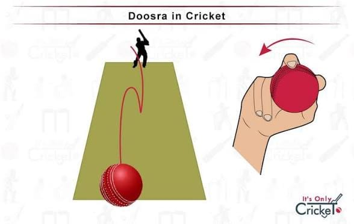
දඟපන්දු යැවීමේ කලාවේ ඇති අතිශය රහස්ය, සූක්ෂ්ම සහ විප්ලවීය පන්දු යැවීමේ ක්රමවේදයකි. සාමාන්ය Off-spin පන්දුවක් යවන ආකාරයේම පන්දු යැවීමේ ඉරියව්වක් (Arm action) පෙන්වමින්, පන්දුව නිකුත් කරන මොහොතේ මැණික් කටුව පිටුපසට (Back of the hand) හරවා යවන මෙම පන්දුව, පිච් එකේ පතිත වූ පසු Off-break පන්දුවකට සප්රතිවිරුද්ධව ඇතුළත සිට පිටතට (Leg to Off) දඟකැවීම සිදු වේ.
ජාත්යන්තර තාක්ෂණික පියවර (Technical Execution)
1.
සාමාන්ය Off-break ග්රහණය පවත්වා ගැනීම (Disguised Grip):
පිතිකරුවාව නොරැවටෙන පරිදි පන්දුවේ ග්රහණය (Grip) සහ පන්දු යැවීමේ ප්රවේශය (Run-up & Stride) සාමාන්ය Off-break පන්දුවකට සමානවම තබාගත යුතුය.
2.
මැණික් කටුවේ පිහිටීම සහ භ්රමණය (Wrist Position & Reverse Snap):
පන්දුව නිකුත් කරන මොහොතේ අල්ල (Palm) පන්දු යවන්නාගේ මුහුණ දෙසට හෝ Fine-leg කලාපය දෙසට හැරවෙන පරිදි මැණික් කටුව පසුපසට (Back of the hand) කරකැවිය යුතුය.
3.
ඇඟිලි භාවිතයෙන් අනික් පසට කැරකැවීම (Finger Release Angle):
පන්දුව මුදා හරින අවස්ථාවේදී මැදැඟිල්ල සහ මුදු ඇඟිල්ල (Ring finger) භාවිතයෙන් පන්දුවට ප්රතිවිරුද්ධ දිශාවට භ්රමණයක් (Anti-clockwise spin) ලබා දිය යුතුය.
4.
නිරවද්ය එල්ලය සහ පන්දු යැවීමේ නීති (Line & Arm Legality):
Middle හෝ Leg stump රේඛාවට පන්දුව පතිත කරමින්, වැලමිටේ නම්යතාවය අන්තර්ජාතික ක්රිකට් කවුන්සිලයේ (ICC) නීතිමය සීමාවන් (Degree of elbow extension) තුළ තබා ගනිමින් පන්දුව එල්ල කළ යුතුය.
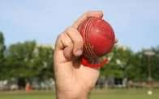
දඟපන්දු යැවීමේ කලාවේ ඇති ප්රබලම රස්කාරක අවියකි. සාමාන්යයෙන් දඟපන්දුවක් කරකැවීම සඳහා ඇඟිලි පාවිච්චි කළද, ආම් බෝල් (Arm ball) එකකදී පන්දුව අතින් නිකුත් කරන මොහොතේ මුළු අතම (Entire arm) සහ මැණික් කටුව පිටුපසට හෝ සිරස් අතට තදින් තබා ගනිමින් පන්දුවට සෘජු වේගයක් ලබා දීම සිදු වේ. පිතිකරුවා පන්දුව දඟකැවෙනු ඇතැයි සිතා වැරදි රේඛාවකින් ක්රීඩා කරන අවස්ථාවක, පන්දුව නොකරකැවී කෙළින්ම ගොස් පැඩ් එකේ වැදීමෙන් (LBW) හෝ කඩුල්ලේ වැදීමෙන් දැවී යාමට මෙය හේතු වේ.
ජාත්යන්තර තාක්ෂණික පියවර (Technical Execution)
1.
සාමාන්ය ග්රහණය පවත්වා ගැනීම (Disguised Grip):
පිතිකරුවාව නොරැවටෙන පරිදි පන්දුව අල්ලා ගන්නා ආකාරය (Seam position) සාමාන්ය දඟපන්දුවකට සමානවම තබාගත යුතුය.
2.
අත සම්පූර්ණයෙන්ම දිග හැරීම (Full Arm Action & Seam Position):
පන්දුව නිකුත් කරන මොහොතේ වැලමිට නැමීමකින් තොරව අත සම්පූර්ණයෙන්ම ඉහළට ඔසවා, පන්දුවේ මැහුම (Seam) හරස් අතට හෝ ඍජුව තබා ගනිමින් වායුගෝලීය පීඩනය (Air drift) ලබා දිය යුතුය.
3.
පන්දුව වේගයෙන් ලිස්සා යාම (Stitching and Slipping):
මැණික් කටුව කරකැවීම වෙනුවට අතේ වේගය (Arm speed) පාවිච්චි කරමින් පන්දුව පිතිකරුවා දෙසට වේගයෙන් විද හැරිය යුතුය (මෙය පිතිකරුවාගේ ශරීරය දෙසට මඳක් Drift වී පසුව Straight ලෙස ගමන් කරයි).
4.
නිවැරදි එල්ලය තබා ගැනීම (Targeting Stumps):
පන්දුව off-stump එකෙන් පිටත හෝ middle stump රේඛාවට පතිත කරමින් පිතිකරුවාව ආරක්ෂක උගුලකට හසු කරගැනීම සඳහා නිවැරදි දිග (Length) පවත්වා ගත යුතුය.
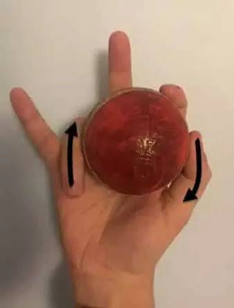
නවීන සීමිත පන්දු වාර (T20/ODI) ක්රිකට් ක්රීඩාවේ දඟපන්දු යවන්නන් බහුලව භාවිතා කරන අතිශය නවීන සහ විප්ලවීය පන්දු යැවීමේ තාක්ෂණයකි. පන්දුව නිකුත් කරන මොහොතේ මැදැඟිල්ල නමා කැරම් පුවරුවක පෙත්තකට පහර දෙන අයුරින් (Flicking the ball) පන්දුවට පහර දෙමින් නිකුත් කරන අතර, පන්දු යවන්නාගේ ඇඟිලි වෙනස් කරන ආකාරය අනුව පන්දුව Off-side එකට හෝ Leg-side එකට ක්ෂණිකව දඟකැවීම සිදු කළ හැක.
ජාත්යන්තර තාක්ෂණික පියවර (Technical Execution)
1.
විශේෂිත ග්රහණය (Carrom Grip):
පන්දුව මාපටැඟිල්ල, දබරැඟිල්ල සහ නමන ලද මැදැඟිල්ල (Bent middle finger) අතර තදින් රඳවා ගනිමින් අත්ල ඇතුළට වන්නට පන්දුව තබාගත යුතුය.
2.
මැදැඟිල්ලේ Flick කිරීමේ ක්රියාකාරිත්වය (Middle Finger Flick):
පන්දුව මුදා හරින ක්ෂණික මොහොතේදී නමා තිබූ මැදැඟිල්ල වේගයෙන් ඉදිරියට දිග හරිමින් (Flick) පන්දුවේ යට කොටසට හෝ පැත්තකට ප්රබල භ්රමණයක් ලබා දිය යුතුය.
3.
දඟකැවෙන දිශාව පාලනය කිරීම (Directional Variations):
ඇඟිල්ල Flick කරන කෝණය වෙනස් කිරීම මඟින් පන්දුව Leg-break එකක් ලෙස (පිටතට) හෝ Off-break එකක් ලෙස (ඇතුළට) පතිත වූ පසු හැරවීමට සැලැස්විය හැක.
4.
එල්ලය සහ පන්දු යැවීමේ රිද්මය (Length & Disguise):
සාමාන්ය Spin පන්දුවක රිද්මයෙන්ම පන්දු යවමින්, Good-length කලාපයට පන්දුව එල්ල කරමින් පිතිකරුවාගේ පහර දීමේ කාල ගණනය (Timing) සහ තීරණ ගැනීමේ හැකියාව අවුල් කළ යුතුය.
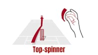
දඟපන්දු යැවීමේ කලාවේ ඇති අතිශය බුද්ධිමත් විචල්යයකි. සාමාන්යයෙන් ලෙග්-ස්පින් (Leg-break) පන්දුවකදී පන්දුව පැත්තට කැරකෙන (Side-spin) අතර, ටොප් ස්පින්නර් (Top-spinner) පන්දුවකදී මැණික් කටුව සහ ඇඟිලි භාවිතයෙන් පන්දුවට ඉදිරියට සිරස් භ්රමණයක් (Over-spin / Forward RPM) ලබා දීම සිදු වේ. මෙහිදී පන්දුව පිතිකරුවා වෙත ළඟා වීමේදී හදිසියේම වේගය වැඩිවීමක් සහ අනපේක්ෂිත ඉහළ පිම්මක් (Extra bounce) ලබා ගැනීමට හැකි වේ.
ජාත්යන්තර තාක්ෂණික පියවර (Technical Execution)
1.
සම්මත ග්රහණය පවත්වා ගැනීම (Disguised Grip):
පන්දුව අල්ලා ගන්නා ආකාරය සාමාන්ය ලෙග්-ස්පින් හෝ ඕෆ්-ස්පින් පන්දුවකට සමානව තබා ගනිමින් පිතිකරුවාව නොරැවටී තබාගත යුතුය.
2.
මැණික් කටුව ඉදිරියට හැරවීම (Wrist Snap & Over-spin Action):
පන්දුව මුදා හරින මොහොතේදී මැණික් කටුව පැත්තට කරකැවීම වෙනුවට, පිතිකරුවා දෙසට කෙළින්ම පහළට සහ ඉදිරියට (Downward wrist flick) තදින් තල්ලු කරමින් ඉදිරි භ්රමණය (Over-spin) ලබා දිය යුතුය.
3.
පන්දුවේ පියාසැරිය සහ උස (Flight and Bounce Control):
වායුගෝලයේදී පන්දුව සාමාන්ය පන්දුවකට වඩා තරමක් උසින් ගමන් කරන අතර, පිච් එකේ පතිත වූ පසු පන්දුව දෙපසට නොහැරී කෙළින්ම ගොස් අමතර පිම්මක් (Extra bounce) ලබා ගනී.
4.
නිරවද්ය දිග පවත්වා ගැනීම (Length & Accuracy):
පිතිකරුවාට ඉදිරියට පැමිණ පහර දීමට හෝ පිටුපසට වී Cut/Pull කිරීමට අපහසු වන පරිදි Good-length හෝ Full-length කලාපයේ පන්දුව පතිත කරවීම මෙහි සාර්ථකත්වයේ රහස වේ.
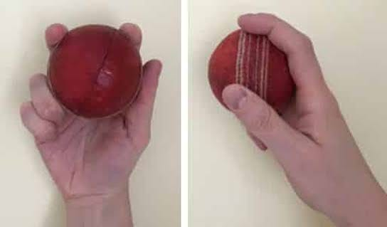
දඟපන්දු යැවීමේ කලාවේ ඇති අතිශය අලංකාර සහ ප්රගුණ කිරීමට අපහසුම සම්භාව්ය (Classic) පන්දු යැවීමේ ක්රමවේදයකි. දකුණත් පිතිකරුවෙකුට එරෙහිව කඩුල්ලේ Leg-stump හෝ Middle-stump එක දෙසට පතිත වන පන්දුව, පතිත වීමෙන් පසු වේගයෙන් Off-stump එක දෙසට පිටතට දඟකැවීම (Turning from leg to off) මෙහිදී සිදුවේ. මැණික් කටුව (Wrist-spin) සහ මුදු ඇඟිල්ල (Ring finger) ප්රබල ලෙස භාවිතා කරමින් පන්දුවට ඉහළ භ්රමණයක් ලබා දීම මෙහි මූලික තාක්ෂණය වේ.
ජාත්යන්තර තාක්ෂණික පියවර (Technical Execution)
1.
පන්දු ග්රහණය (Seam & Finger Placement):
පන්දුවේ මැහුම (Seam) ඇඟිලිවලට සමාන්තරව තබාගනිමින්, දබරැඟිල්ල, මැදැඟිල්ල සහ මුදු ඇඟිල්ල (Ring finger) මත පන්දුව රඳවාගත යුතුය. මුදු ඇඟිල්ල පන්දුව දඟකැවීම සඳහා ප්රධාන ලෙස භාවිත වේ.
2.
මැණික් කටුවේ කැරකැවීම (Wrist Snap & Release):
පන්දුව නිකුත් කරන ක්ෂණික මොහොතේදී අත්ල (Palm) පන්දු යවන්නා දෙසට හැරවෙන පරිදි මැණික් කටුව වමෙන් දකුණට (Anti-clockwise) වේගයෙන් කරකවමින් පන්දුව නිකුත් කළ යුතුය.
3.
පන්දුවේ පියාසැරිය සහ උස (Flight & Drift):
පන්දුවට හොඳ ගුවනක් (Looped flight) ලබා දෙමින් වාතයේදී පිතිකරුවා දෙසට මඳක් Drift වී, පතිත වූ පසු පිටතට ක්ෂණිකව හැරවීමට සැලැස්විය යුතුය.
4.
නිරවද්ය එල්ලය සහ පාලනය (Line, Length & Balance):
Middle හෝ Leg stump රේඛාවට පන්දුව පතිත කරමින්, ශරීරයේ සමබරතාවය සහ Follow-through එක පරිපූර්ණව පවත්වා ගනිමින් පන්දුව යොමු කළ යුතුය.
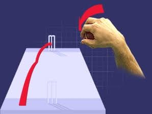
ක්රිකට් ක්රීඩාවේ දඟපන්දු යැවීමේ කලාවේ ඇති අතිශය සූක්ෂ්ම සහ පිතිකරුවන් බහුලව මුළා කරන ප්රධානම ප්රහාරක අවියකි. පා දඟපන්දු යවන්නෙකු සාමාන්ය ලෙග්-ස්පින් පන්දුවක් යවන ආකාරයේම ක්රියාකාරිත්වයක් (Action) පෙන්වුවද, පන්දුව නිකුත් කරන මොහොතේ මැණික් කටුව සම්පූර්ණයෙන්ම වෙනස් දිශාවකට හරවා (Wrist and finger reversal) මෙම පන්දුව යවනු ලැබේ. මෙහිදී පන්දුව පිතිකරුවාගේ off-stump එකෙන් පතිත වී leg-stump එක දෙසට (Off to Leg) ඇතුළට දඟකැවීම සිදු වේ.
ජාත්යන්තර තාක්ෂණික පියවර (Technical Execution)
1.
සාමාන්ය ග්රහණය පවත්වා ගැනීම (Disguised Grip):
පිතිකරුවාව නොරැවටෙන පරිදි පන්දුව අල්ලා ගන්නා ආකාරය (Seam and finger position) සාමාන්ය Leg break පන්දුවකට සමානවම තබාගත යුතුය.
2.
මැණික් කටුව ප්රතිවිරුද්ධ දිශාවට හැරවීම (Wrist & Palm Reversal):
පන්දුව මුදා හරින ක්ෂණික මොහොතේදී අත්ල (Palm) පිතිකරුවා දෙසට හෝ ඉහළට හැරවෙන පරිදි මැණික් කටුව දකුණෙන් වමට (Clockwise) වේගයෙන් කරකැවිය යුතුය.
3.
දබරැඟිල්ල සහ මාපටැඟිල්ල භාවිතය (Finger Release):
මෙහිදී මුදු ඇඟිල්ල වෙනුවට දබරැඟිල්ල (Index finger) සහ මාපටැඟිල්ල (Thumb) ප්රධාන වශයෙන් භාවිතා කරමින් පන්දුවට ප්රතිවිරුද්ධ භ්රමණයක් ලබා දිය යුතුය.
4.
නිරවද්ය එල්ලය සහ සැඟවීම (Disguise & Length Control):
පන්දුව පන්දු යවන ඉරියව්වෙන් (Action) සහ මුහුණේ ඉරියව්වලින් සාමාන්ය ලෙග්-ස්පින් පන්දුවක් ලෙසම පෙන්වමින්, Off-stump රේඛාව ආසන්නයේ පතිත කරවීම මෙහි සාර්ථකත්වයේ පදනම වේ.
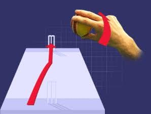
පා දඟපන්දු යැවීමේ කලාවේ ඇති ප්රබලම සහ ක්රීඩා කිරීමට අතිශයින්ම අපහසු විචල්යයකි. සාමාන්යයෙන් ලෙග්-ස්පින් පන්දුවක් ඉහළ භ්රමණයකින් (Top spin/Back spin) ඉහළට යද්දී, ෆ්ලිපර් (Flipper) පන්දුවකදී මාපටැඟිල්ල සහ අනෙකුත් ඇඟිලි අතරින් පන්දුව පසුපසට තද කරමින් යටින් පහළට (Under-spin / Back-spin) වේගයෙන් මුදා හැරීම සිදු වේ. මෙහිදී පන්දුව වාතයේදී ලිස්සා යමින්, පිච් එකේ පතිත වූ පසු බලාපොරොත්තු වූවාට වඩා වේගයෙන් සහ පහළට (Skiddy & Low bounce) පිතිකරුවා වෙත ගමන් කරයි.
ජාත්යන්තර තාක්ෂණික පියවර (Technical Execution)
1.
විශේෂිත ඇඟිලි ග්රහණය (Under-spin Grip):
පන්දුව මාපටැඟිල්ලට යටින් තබා ගනිමින්, දබරැඟිල්ල සහ මැදැඟිල්ල මඟින් පන්දුවේ උඩ කොටසින් තද කර අල්ලා ගත යුතුය (සාමාන්ය ලෙග්-ස්පින් ග්රහණයට වඩා වෙනස් ක්රමයකි).
2.
මැණික් කටුව පිටුපසට නැමීම (Wrist Cocking & Squeeze):
පන්දුව නිකුත් කරන මොහොතේ මැණික් කටුව තදින් පිටුපසට හරවා, මාපටැඟිල්ල සහ අනෙක් ඇඟිලි අතරින් පන්දුව මිරිකමින් (Squeezing out) වේගයෙන් ඉදිරියට තල්ලු කළ යුතුය.
3.
පසුපස භ්රමණය ලබා දීම (Back-spin / Under-spin Execution):
පන්දුවට ඉදිරි භ්රමණය ලැබීම වෙනුවට පසුපසට කැරකෙන භ්රමණයක් (Back-spin) ලබා දීම මඟින් පන්දුව පිච් වීමෙන් පසු වේගයෙන් ලිස්සා යාමට (Skid) සැලැස්විය හැක.
4.
නිවැරදි දිග සහ එල්ලය (Length Control for LBW):
පන්දුව Full-length හෝ Good-length කලාපයට එල්ල කිරීමෙන්, පිතිකරුවා බැක්ෆුට් හෝ ෆ්රන්ට්ෆුට් යද්දී පන්දුව උස ගොස් පහර වැදීමට පෙර කෙළින්ම පැඩ් එකේ හෝ විකට්වල වැදී දැවී යාමට (LBW / Bowled) සැලැස්විය හැක.
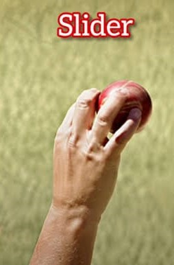
දඟපන්දු යැවීමේ කලාවේ ඇති තවත් වටිනා විචල්යයකි. ලෙග්-ස්පින් සහ ෆ්ලිපර් (Flipper) අතර මැද ස්වභාවයක් ගන්නා ස්ලයිඩර් (Slider) පන්දුවකදී, මැණික් කටුව සම්පූර්ණයෙන්ම කරකැවීම වෙනුවට අතේ සහ ඇඟිලිවල වේගය පාවිච්චි කරමින් පන්දුවට අර්ධ පාර්ශ්වීය භ්රමණයක් (Side-spin combined with back-spin) ලබා දීම සිදු වේ. මෙහිදී පන්දුව පිතිකරුවා අපේක්ෂා කරනවාට වඩා වේගයෙන් ගමන් කරමින් පිච් එකේ පතිත වූ පසු ලිස්සා යාම (Skidding through) නිසා පිතිකරුවාගේ ටයිමින් එක සම්පූර්ණයෙන්ම අවුල් කර දැමීමට හැකියාව ලැබේ.
ජාත්යන්තර තාක්ෂණික පියවර (Technical Execution)
1.
මඳක් වෙනස් කළ ග්රහණය (Modified Grip):
පන්දුවේ මැහුම (Seam) තරමක් ඇලයට තබා ගනිමින්, මාපටැඟිල්ල සහ දබරැඟිල්ල/මැදැඟිල්ල අතර පන්දුව සැහැල්ලුවෙන් රඳවා ගත යුතුය.
2.
මැණික් කටුව ස්ථාවරව තබා ගැනීම (Controlled Wrist Position):
පන්දුව මුදා හරින මොහොතේ ලෙග්-බ්රේක් පන්දුවක මෙන් මැණික් කටුව තදින් කරකැවීමෙන් තොරව, අතේ වේගය (Arm speed) වැඩි කරමින් පන්දුව ඉදිරියට තල්ලු කළ යුතුය.
3.
පන්දුව ලිස්සා යාම සහ වේගය පාලනය (Skiddy Pace & Trajectory):
වාතයේදී සාමාන්ය ලෙග්-ස්පින් පන්දුවකට වඩා වේගයෙන් ගමන් කරන අතර, පිච් වීමෙන් පසු වැඩිපුර දඟකැවීමකට ලක් නොවී කෙළින්ම හෝ මඳක් ලිස්සා යයි.
4.
නිවැරදි එල්ලය සහ උගුල (Length & Surprise Element):
පිතිකරුවා දඟපන්දුවක් යැයි සිතා පසුපසට වී හෝ ඉදිරියට පැමිණ පහර දීමට යද්දී, වේගවත් වෙනස නිසා පිත්තේ දාරයේ වැදී හෝ පැඩ් එකේ වැදී දැවී යාමට සලස්වන ආකාරයට එල්ලය පවත්වා ගත යුතුය.
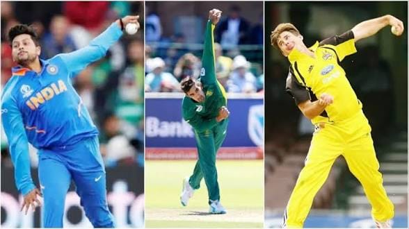
ලෝක ක්රිකට් පිටියේ දක්නට ලැබෙන අතිශය දුර්ලභ සහ චමත්කාරජනක පන්දු යැවීමේ ශෛලියකි. වමත් පා දඟපන්දු යවන්නෙකු (Left-arm wrist-spinner) විසින් මැණික් කටුව භාවිතා කරමින් යවන මෙම පන්දුව, දකුණත් පිතිකරුවෙකුට එරෙහිව Off-stump එක දෙස පතිත වී Leg-stump එක දෙසට (Off to Leg) ඇතුළට දඟකැවීම සිදු වේ. දකුණත් ලෙග්-ස්පින් පන්දුවකට සප්රතිවිරුද්ධ දිශාවට පන්දුව කරකැවෙන බැවින් මෙය පිතිකරුවන්ට කියවීම අතිශයින්ම අපහසු වේ.
ජාත්යන්තර තාක්ෂණික පියවර (Technical Execution)
1.
පන්දු ග්රහණය සහ ඇඟිලි පිහිටීම (Grip & Finger Alignment):
වම් අතේ මැහුම (Seam) ඇඟිලිවලට හරස් වන සේ තබා ගනිමින්, මුදු ඇඟිල්ල (Ring finger) මඟින් පන්දුවට ප්රධාන භ්රමණය ලබා දීමට ග්රහණය සකසා ගත යුතුය.
2.
වම් මැණික් කටුවේ භ්රමණය (Left Wrist Snap):
පන්දුව නිකුත් කරන ක්ෂණික මොහොතේදී වම් අතේ මැණික් කටුව දකුණෙන් වමට (Clockwise) වේගයෙන් කරකවමින් පන්දුවට පිටත සිට ඇතුළට දඟකැවීම ලබා දිය යුතුය.
3.
ගුවන් මඟ සහ ඩ්රිෆ්ට් (Flight & Air Drift):
පන්දුවට හොඳ ගුවනක් (Flight) ලබා දීම මඟින් වාතයේදී පන්දුව පිටතට Drift වී, පතිත වූ පසු ක්ෂණිකව පිතිකරුවාගේ ශරීරය දෙසට ඇතුළට කඩා වදින පරිදි යොමු කළ යුතුය.
4.
එල්ලය සහ උගුල (Line & Disguise):
Off-stump රේඛාවට පන්දුව පතිත කරමින්, පිතිකරුවා Drive කිරීමට පෙළඹෙන Good-length කලාපයේ පන්දුව පතිත කරවීම මෙහි සාර්ථකත්වයේ පදනම වේ.
Fast Bowling
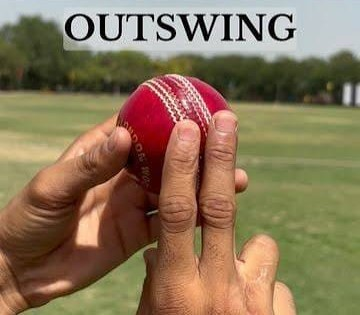
වේගපන්දු යැවීමේ කලාවේ ඇති අතිශය අලංකාර සහ පිතිකරුවන් දවා ගැනීමට ඇති ප්රබලම අවියකි. දකුණත් පිතිකරුවෙකුට එරෙහිව පන්දුව Off-stump රේඛාවෙන් හෝ එයින් මඳක් පිටතින් පතිත කර, වායුගෝලීය පීඩනය (Aerodynamics) සහ මැහුමේ (Seam) පිහිටීම හරහා පිතිකරුවාගෙන් ඉවතට (In to out / Away from the bat) හැරවී යාම මෙහිදී සිදුවේ. පිතිකරුවාගේ පිත්තේ දාරයේ (Edge) වැදී කඩුලු රකින්නාට හෝ ස්ලිප් (Slip) පන්දු යැවන්නන්ට උඩපන්දු ලබා දීමට මෙම පන්දුව අතිශයින්ම සමත් වේ.
ජාත්යන්තර තාක්ෂණික පියවර (Technical Execution)
1.
පන්දු ග්රහණය සහ මැහුම ඇල කිරීම (Seam Position & Grip):
පන්දුවේ මැහුම (Seam) පළමු හෝ දෙවන ස්ලිප් (Slip) කලාපය දෙසට මඳක් ඇල කරමින්, දබරැඟිල්ල සහ මැදැඟිල්ල මැහුම දෙපසින් තදින් අල්ලා ගත යුතුය.
2.
මැණික් කටුව සහ මැදැඟිල්ලේ ක්රියාකාරිත්වය (Wrist & Index Finger Release):
පන්දුව නිකුත් කරන මොහොතේ මැණික් කටුව ස්ථාවරව තබා ගනිමින්, දබරැඟිල්ල මඟින් පන්දුවට පිටත සිට ඇතුළට තල්ලුවක් ලබා දෙමින් පන්දුවේ ඔප දැමූ පැත්ත (Shiny side) ඉස්මතු වන සේ යැවිය යුතුය.
3.
පන්දුවේ පියාසැරිය සහ වායුගෝලීය පැත්ත (Air Swing & Pressure):
පන්දුවේ එක් පැත්තක් හොඳින් ඔප දමා (Polish) අනෙක් පැත්ත රළු කර තැබීම මඟින් වාතයේ පීඩන වෙනසක් ඇති වී පන්දුව ස්වාභාවිකවම පිටතට හැරී යාමට (Swing away) පටන් ගනී.
4.
නිවැරදි එල්ලය සහ දිග (Length & Corridor of Uncertainty):
පිතිකරුවාට ක්රීඩා කිරීමට අනිවාර්යයෙන්ම සිදුවන Off-stump රේඛාවට (Corridor of uncertainty) පන්දුව එල්ල කිරීමෙන් පිතිකරුවාව උගුලට හසු කරගත හැක.
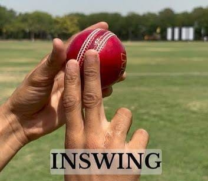
වේගපන්දු යවන්නෙකුගේ ආයුධ අතර ඇති අතිශය මාරාන්තික ප්රහාරක ක්රමවේදයකි. දකුණත් පිතිකරුවෙකුට එරෙහිව පන්දුව පිටත සිට මැද කඩුල්ල හෝ පාදයේ කඩුල්ල (Middle or Leg stump) දෙසට වාතයේදී ඇතුළට හැරී යාම (Swinging in) මෙහිදී සිදුවේ. පිතිකරුවා පන්දුවේ රේඛාව වැරදි ලෙස තක්සේරු කරන අවස්ථාවක, පන්දුව කෙළින්ම පැඩ් එකේ වැදී දැවී යාමට (LBW) හෝ කඩුල්ලේ වැදී (Bowled) දැවී යාමට මෙම පන්දුව අතිශයින්ම බලපෑම් කරයි.
ජාත්යන්තර තාක්ෂණික පියවර (Technical Execution)
1.
පන්දු ග්රහණය සහ මැහුම කංසා කලාපය දෙසට ඇල කිරීම (Seam Position & Grip):
පන්දුවේ මැහුම (Seam) fine-leg හෝ leg-slip කලාපය දෙසට මඳක් ඇල කරමින්, දබරැඟිල්ල සහ මැදැඟිල්ල මැහුම දෙපසින් තදින් අල්ලා ගත යුතුය.
2.
මැණික් කටුව සහ මාපටැඟිල්ලේ ක්රියාකාරිත්වය (Wrist & Thumb Release):
පන්දුව නිකුත් කරන මොහොතේ මැණික් කටුව මඳක් ඇතුළට හැරවමින්, මාපටැඟිල්ල සහ මැදැඟිල්ල මඟින් පන්දුවට ඇතුළට පීඩනයක් ලබා දෙමින් නිකුත් කළ යුතුය.
3.
වායුගෝලීය පීඩනය සහ ඔප දැමූ පැත්ත (Air Pressure & Shiny Side):
පන්දුවේ ඔප දැමූ පැත්ත (Shiny side) පිතිකරුවා දෙසට හෝ වම් පසට හැරී ඇති පරිදි තබා ගැනීමෙන්, වාතයේ පීඩන වෙනස නිසා පන්දුව ඇතුළට හැරී යාමට පටන් ගනී.
4.
නිවැරදි එල්ලය සහ දිග (Line & Length for LBW/Bowled):
පිතිකරුවාගේ ඉදිරි පාදය අභියසට හෝ Middle stump රේඛාවට Good-length කලාපයෙන් පන්දුව යොමු කිරීමෙන් උපරිම ප්රතිඵල ලබාගත හැක.
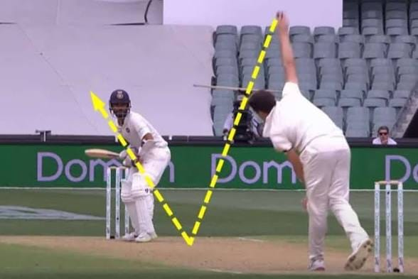
වේගපන්දු යැවීමේ කලාවේ ඇති අතිශය ආක්රමණශීලී සහ පිතිකරුවාව බිය ගැන්වීම සඳහා යොදා ගන්නා ප්රධානම අවියකි. පන්දුව පිච් එකේ මැදට ආසන්නව (Short-length) තදින් පතිත කරමින්, පිතිකරුවාගේ ලැම හෝ හිස මට්ටමට (Shoulder to head height) වේගයෙන් ඉහළ නැඟීමට සැලැස්වීම මෙහිදී සිදුවේ. පිතිකරුවාව පසුපස පාදයට (Back foot) තල්ලු කරමින් ඔහුගේ නිදහස් පහරදීම් සීමා කිරීමට සහ උඩපන්දු ලබා ගැනීමට මෙම පන්දුව භාවිතා කරයි.
ජාත්යන්තර තාක්ෂණික පියවර (Technical Execution)
1.
පන්දු ග්රහණය සහ පෘෂ්ඨයට පහර දීම (Grip & Hard Surface Hit):
පන්දුවේ මැහුම (Seam) සිරස් අතට තබා ගනිමින්, දබරැඟිල්ල සහ මැදැඟිල්ල මඟින් පන්දුවට තද පීඩනයක් යොදමින් පන්දුව පිච් එකේ තදින් වැදීමට සලස්වන ආකාරයට ග්රහණය කරගත යුතුය.
2.
මැණික් කටුව පහළට කැපීම (Wrist Snap & Backspin/Topspin):
පන්දුව නිකුත් කරන ක්ෂණික මොහොතේදී මැණික් කටුව තදින් පහළට (Downward wrist flick) කරකවමින්, පන්දුව පිච් එකට වැදී වේගයෙන් උඩට විසිවන පරිදි අමතර බලයක් යෙදිය යුතුය.
3.
කෙටි දිග සහ පිම්ම පාලනය (Short Length & Trajectory):
පන්දුව පිච් එකේ මීටර් 7-8ත් අතර (Short of a length) කලාපයක පතිත කරමින්, පන්දුවේ උස පිතිකරුවාගේ කරට හෝ හිසට ආසන්න වන පරිදි පාලනය කරගත යුතුය.
4.
නීතිමය සීමාවන් සහ ආරක්ෂාව (Rules & Height Safety):
අන්තර්ජාතික ක්රිකට් කවුන්සිලයේ (ICC) සීමිත පන්දු වාර නීතිවලට අනුව පන්දුවාරයකට හිමි බවුන්සර් සීමාවන් (One/Two per over limit) තුළ සිටිමින් පන්දුව යොමු කළ යුතුය.
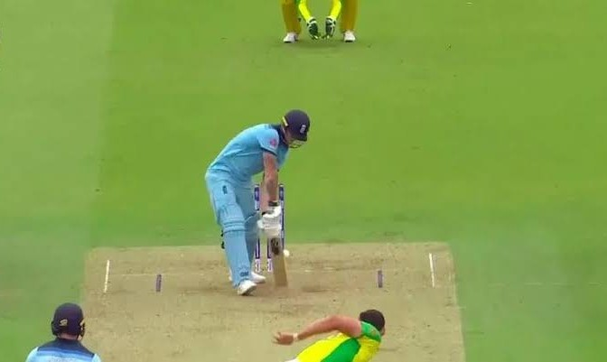
ක්රිකට් ක්රීඩාවේ ඇති අතිශය දුෂ්කර සහ පිතිකරුවන්ට පහර දීමට ඇති අපහසුම වේගපන්දු යැවීමේ අවියයි. පන්දුව පිතිකරුවාගේ පාදවලට හෝ කඩුල්ලේ පාමුලට (Toe-crush or base of the stumps) කෙළින්ම පතිත වන සේ යොමු කරන මෙම පන්දුව, පිතිකරුවාට සාමාන්යයෙන් ඉදිරියට හෝ පසුපසට වී පහර දීමට ඉඩක් ලබා නොදේ. විශේෂයෙන්ම මරණීය ඕවරවල (Death overs) ලකුණු පාලනය කර ගැනීමට සහ කඩුලු දවා ගැනීමට යොදා ගන්නා ප්රධානම තාක්ෂණය මෙය වේ.
ජාත්යන්තර තාක්ෂණික පියවර (Technical Execution)
1.
පන්දු ග්රහණය සහ මැහුම සිරස්ව තබා ගැනීම (Seam Position & Grip):
පන්දුවේ මැහුම (Seam) ඍජුව තබා ගනිමින්, දබරැඟිල්ල සහ මැදැඟිල්ල මැහුම දෙපසින් සාමාන්ය ආකාරයට තදින් අල්ලා ගත යුතුය.
2.
අත මුදා හැරීමේ උස සහ වේගය (Release Point & Arm Speed):
පන්දුව නිකුත් කරන මොහොතේදී අත හැකි තරම් ඉදිරියට ගෙන යමින් (High-arm action), පිතිකරුවාගේ පිච් එකට මඳක් ඈතින් හෝ පාදයට ආසන්නයෙන් පන්දුව බිම වැටීමට සැලැස්වීමට අවශ්ය වේගය සහ කෝණය පාලනය කළ යුතුය.
3.
නිරවද්ය ඉලක්කය සහ දිග පාලනය (Accuracy & Full Length Targeting):
පන්දුව පිච් වන ස්ථානය (Pitching area) පිතිකරුවාගේ කකුලට මීටර් 1ක් හෝ 1.5ක් පමණ ඉදිරියෙන් පිහිටන සේ නිවැරදි ඉලක්කයකට යොමු කළ යුතුය (Full-toss හෝ Half-volley වීම වැළැක්වීම සඳහා).
4.
පරිපූර්ණ Follow-through සහ ශරීරයේ සමබරතාවය (Follow-through & Balance):
පන්දුව නිකුත් කිරීමෙන් පසු ශරීරයේ ඉදිරි momentum එක පාලනය කරමින්, පිතිකරුවාගේ කෙළින් එන ප්රතිප්රහාර වලින් ආරක්ෂා වීමට සූදානම්ව සිටිය යුතුය.
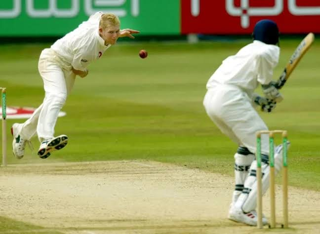
ක්රිකට් ක්රීඩාවේදී බිම පතිත නොවී (No bounce) කෙළින්ම පිතිකරුවා වෙත ළඟා වන පන්දුවක් ලෙස ෆුල් ටොස් (Full toss) හැඳින්වේ. පන්දු යවන්නාගේ අතින් වැරදීමකින් හෝ උපායමාර්ගිකව (විශේෂයෙන්ම සීමිත ඕවර ක්රීඩාවේ slower ball එකක් ලෙස) නිකුත් වන මෙම පන්දුව, පිතිකරුවන්ට පහසුවෙන් ලකුණු රැස් කර ගැනීමට මෙන්ම අනෙක් අතට අනපේක්ෂිත ලෙස දවා ගැනීමටද හේතු විය හැක. නීතිමය වශයෙන් ඉණෙන් ඉහළට (Above waist height) පැමිණෙන ෆුල් ටොස් පන්දු No-ball ලෙස නම් කරනු ලැබේ.
ජාත්යන්තර තාක්ෂණික පියවර (Technical Execution)
1.
පන්දුවේ උස සහ දිශාව කල් තියා හඳුනා ගැනීම (Early Tracking):
පන්දු යවන්නාගේ අතින් නිකුත් වන මොහොතේ සිටම පන්දුව පිච් වීමක් නොමැතිව කෙළින්ම පැමිණෙන බව තක්සේරු කර පිත්ත රැගෙන යා යුතුය.
2.
ස්ථානගත වීම සහ ශරීරයේ සමබරතාවය (Positioning & Stance):
පන්දුව පැමිණෙන උස (இණ මට්ටම හෝ දණහිස් මට්ටම) අනුව ඉදිරි හෝ පසුපස පාදය පවත්වමින් පිත්ත නිවැරදි කෝණයකට සූදානම් කරගත යුතුය.
3.
පහර එල්ල කිරීමේ ක්රමවේදය (Execution & Placement):
ඉණ මට්ටමින් එන ෆුල් ටොස් පන්දුවක් මඟින් ඈතට (Mid-wicket හෝ Long-on දෙසට) බලවත් පහරවල් (Lofted shots) එල්ල කිරීමට හෝ ඩ්රයිව් (Drive) කිරීමට හැකියාව ඇත.
4.
පන්දු යවන්නාගේ දෘෂ්ටිකෝණයෙන් (Bowling Execution):
වේගපන්දු යවන්නන් හිතාමතාම යොදන 'Dip' වන සේ සකස් කරන ලද Slower full-toss මඟින් පිතිකරුවාගේ ටයිමින් එක සම්පූර්ණයෙන්ම වැරදීමට සැලැස්විය හැක.
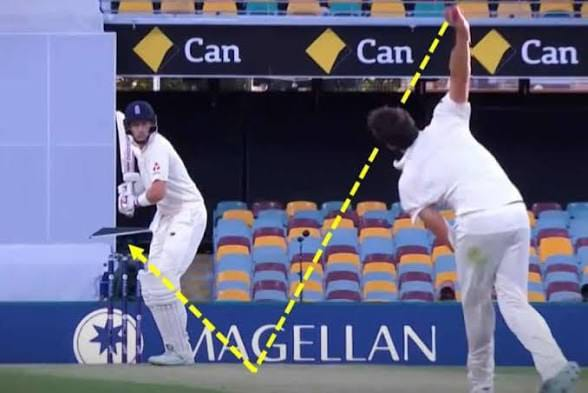
ක්රිකට් ක්රීඩාවේ වේගපන්දු යැවීමේ මෙන්ම දඟපන්දු යැවීමේ කොඳු නාරටිය ලෙස සැලකෙන අතිශය තීරණාත්මක පන්දු යැවීමේ දිග (Length) ප්රදේශයකි. පන්දුව පිතිකරුවාගේ සිට මීටර් 6ත් 8ත් පමණ දුරකින් (විශේෂයෙන්ම Corridor of uncertainty තුළ) බිම පතිත වීම මෙහිදී සිදු වේ. පිතිකරුවාට ඉදිරියට ගොස් ඩ්රයිව් කිරීමට හෝ පසුපසට වී පහර දීමට එකවරම තීරණයක් ගැනීමට නොහැකි වන පරිදි (Indecision) පිතිකරුවාව දැඩි ලෙස උගුලට හසු කර ගැනීමට මෙම ලෙන්ත් බෝල් එක අතිශයින්ම සමත් වේ.
ජාත්යන්තර තාක්ෂණික පියවර (Technical Execution)
1.
නිවැරදි ඉලක්කය සහ රේඛාව තෝරා ගැනීම (Targeting the Seam & Corridor):
පන්දුවේ මැහුම (Seam) ඍජුව තබා ගනිමින් පිතිකරුවාගේ Off-stump රේඛාව ආසන්නයට පන්දුව යොමු කිරීමට අවශ්ය මානසික හා කායික සූදානම ලබාගත යුතුය.
2.
අත මුදා හැරීමේ ලක්ෂ්යය පාලනය කිරීම (Consistent Release Point):
පන්දු යවන්නා තමාගේ අත නිකුත් කරන උස සහ වේගය සෑම පන්දුවකටම එකම ආකාරයකට පවත්වා ගනිමින් (Consistency), පිතිකරුවාට පන්දුවේ දිග කල් තියා හඳුනා ගැනීමට අපහසු වන සේ ක්රියා කළ යුතුය.
3.
ස්වභාවික විචල්යයන් උපරිමයෙන් ප්රයෝජනයට ගැනීම (Extracting Movement):
පිච් එකේ ස්වභාවය අනුව පන්දුව Inswing, Outswing හෝ Seam movement හරහා දෙපසට හැරවීමට මෙන්ම අමතර පිම්මක් (Extra bounce) ලබා ගැනීමට මෙම Length එක කදිම අවස්ථාවකි.
4.
පිතිකරුවාගේ මනස අවුල් කිරීම (Forcing Defensive Shots):
පිතිකරුවාට ලකුණු රැස් කිරීමට ඉඩ නොදී, නිරන්තරයෙන්ම එකම Length එකක පන්දු යැවීමෙන් පිතිකරුවාගේ ඉවසීම පරීක්ෂා කර දාරයේ වැදී (Edge) උඩපන්දු ලබා ගැනීමට උගුල් ඇස්වීම.
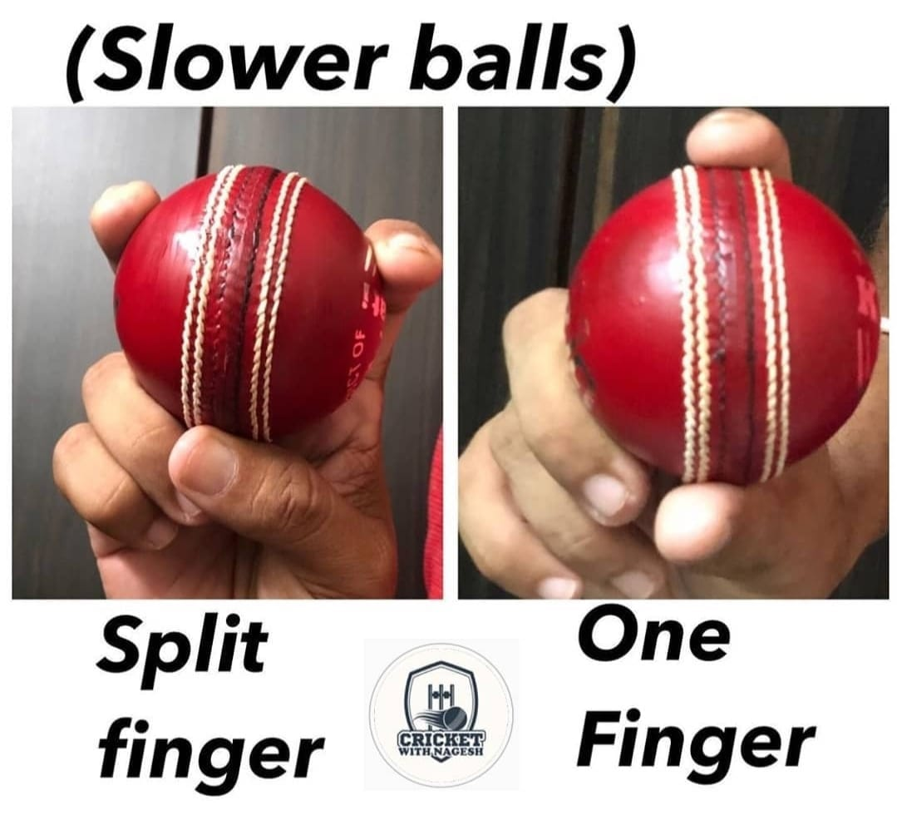
නවීන සීමිත පන්දු වාර (T20/ODI) ක්රිකට් ක්රීඩාවේ වේගපන්දු යවන්නන්ගේ ප්රබලම රහස් අවියකි. පිතිකරුවා වේගවත් පන්දුවකට (Fast delivery) මුහුණ දීමට සූදානම් වන මොහොතේ, එකම පන්දු යැවීමේ ඉරියව්ව (Action) පෙන්වමින් පන්දුවට සැලකිය යුතු ලෙස වේගය අඩු කර යැවීම මෙහිදී සිදු වේ. පිතිකරුවා වේගය වැරදි ලෙස තක්සේරු කර කලින්ම පහර දීමට (Early shot) පෙළඹීම නිසා පන්දුව පිත්තේ වැදී උඩපන්දුවක් ලෙස හෝ කඩුල්ලේ වැදී දැවී යාමට (Caught or Bowled) මෙම Slow ball එක අතිශයින්ම බලපෑම් කරයි.
ජාත්යන්තර තාක්ෂණික පියවර (Technical Execution)
1.
විශේෂිත ග්රහණ ක්රමවේද (Deceptive Grips - Off-cutter / Back of the hand):
පන්දුව යවන අවස්ථාවේදී සාමාන්ය ග්රහණය වෙනුවට පන්දුවේ මැහුම හරස් අතට අල්ලා ඇඟිලිවල තුඩුවලින් පීඩනය යෙදීම (Off-cutter) හෝ මැණික් කටුව පිටුපසට හරවා යැවීම (Back-of-the-hand slower ball) වැනි ක්රම භාවිතා කළ යුතුය.
2.
එකම පන්දු යැවීමේ ඉරියව්ව පවත්වා ගැනීම (Action Disguise):
පන්දු යවන්නාගේ දුවිම් මඟ (Run-up) සහ අත ඉහළට ඔසවන ආකාරය සාමාන්ය වේගවත් පන්දුවකට සමානවම තබා ගනිමින් පිතිකරුවාව මුළා කළ යුතුය.
3.
නිවැරදි දිග සහ ඉලක්කය තෝරා ගැනීම (Length & Pitching Area):
මෙම පන්දු බහුලවම Full-length (Yorker උත්සාහයක් ලෙස) හෝ Back-of-a-length (Slower bouncer) ලෙස යොමු කිරීමෙන් පිතිකරුවාගේ Timing එක සම්පූර්ණයෙන්ම කඩාකප්පල් කළ හැක.
4.
වාතයේදී පන්දුව පියාසර කිරීම සහ වැටීම (Dip & Air Drag):
අඩු වේගය නිසා පන්දුව වාතයේදී මඳක් වැඩිපුර උඩට ගොස් (Loop/Dip) පිතිකරුවා අපේක්ෂා කරන වේගයට වඩා පමා වී පැමිණීම මෙහි ප්රධාන සාර්ථකත්වයයි.
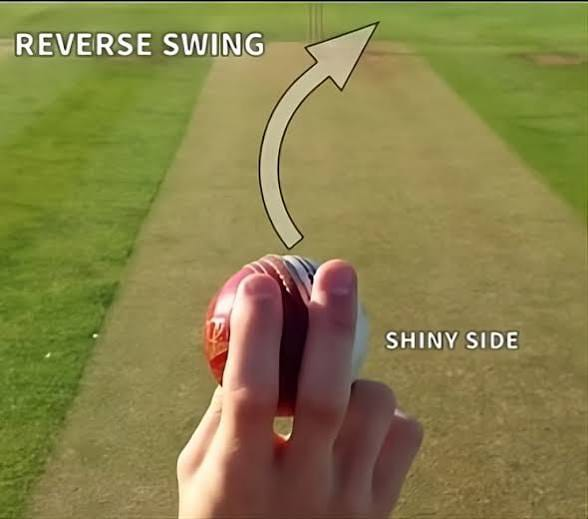
ක්රිකට් ක්රීඩාවේ වේගපන්දු කලාවේ ඇති අතිශය විද්යාත්මක සහ මාරාන්තිකම ප්රහාරක ක්රමවේදයකි. සාමාන්යයෙන් පන්දුවක් අලුත් අවධියේදී ඔප දැමූ පැත්තට (Shiny side) විරුද්ධ දිශාවට ස්විං වුවද, පන්දුව ඕවර 30-40කට වඩා වැඩි කාලයක් පාවිච්චි කර එක් පැත්තක් හොඳින් ඔප දමා අනෙක් පැත්ත රළු කරගත් පසු, පන්දුව සාමාන්ය ස්විං වන දිශාවට **සම්පූර්ණයෙන්ම ප්රතිවිරුද්ධ දිශාවට** (Unexpected late swing into or away from the batsman) වේගයෙන් හැරී යාම සිදුවේ.
ජාත්යන්තර තාක්ෂණික පියවර (Technical Execution)
1.
පන්දුවේ තත්ත්වය සහ පෘෂ්ඨය සකස් කිරීම (Ball Conditioning):
පන්දුවේ එක් පැත්තක් ක්රීඩකයන්ගේ දහඩිය හෝ කේටය (Saliva) යොදා හොඳින් ඔප දමා දිලිසෙන ලෙස තබා ගන්නා අතර, අනෙක් පැත්ත තණතීරුවේ වැදී රළු වී යාමට සලස්වා පීඩන වෙනසක් (Pressure differential) ඇති කරගත යුතුය.
2.
අවශ්ය අවම වේගය පවත්වා ගැනීම (High Arm Speed - Minimum 140 km/h):
රිවර්ස් ස්විං සාර්ථක වීමට නම් පන්දු යවන්නා සාමාන්යයෙන් පැයට කිලෝමීටර 135-140කට වඩා වැඩි වේගයකින් (High arm speed) පන්දුව නිකුත් කළ යුතුය. වේගය අඩු වුවහොත් පන්දුව වාතයේදී ස්විං වීම සිදුවන්නේ නැත.
3.
මැහුම සහ මැණික් කටු පාලනය (Seam Alignment & Release):
පන්දුවේ මැහුම (Seam) තරමක් ඇල කරමින් හෝ සිරස්ව තබා ගනිමින්, ඔප දැමූ පැත්ත වාතයේ ප්රතිරෝධයට මුහුණ දෙන අයුරින් තදින් මුදා හැරිය යුතුය.
4.
පරම ප්රමාද ස්විං ක්රියාකාරිත්වය (Late Swing Execution):
පන්දුව පිතිකරුවා වෙත ළඟා වීමට මීටර් කිහිපයක් පමණක් තිබියදී (Very late in the air) ක්ෂණිකව පිතිකරුවාගේ පාදය හෝ කඩුල්ල දෙසට කඩා වැටීම මෙහි ඇති සුවිශේෂී ස්වභාවයයි.
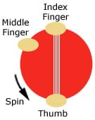
වේගපන්දු යවන්නන්ගේ අවි ගබඩාවේ ඇති අතිශයින්ම සූක්ෂ්ම සහ ප්රයෝජනවත් මන්දගාමී පන්දු (Slower delivery) වර්ගයකි. දකුණත් පිතිකරුවෙකුට එරෙහිව පන්දුව නිකුත් කරන ක්ෂණික මොහොතේ දබරැඟිල්ල සහ මැදැඟිල්ල පන්දුවේ මැහුම මතින් (Across the seam) පිටත සිට ඇතුළට කපා හරිනු (Cut) ලැබේ. මෙහිදී පන්දුවේ වේගය අඩුවනවා පමණක් නොව, පිච් එකේ පතිත වීමෙන් පසු පිතිකරුවාගෙන් පිටතට (Off to leg / Away from the bat) හෝ මඳක් හැරී යාම නිසා පිතිකරුවන් පහසුවෙන් උඩපන්දු ලබා දී දැවී යාමට (Caught behind or in-field) පත් වේ.
ජාත්යන්තර තාක්ෂණික පියවර (Technical Execution)
1.
මැහුම හරස් අතට ග්රහණය කර ගැනීම (Cross-seam Finger Grip):
පන්දුවේ මැහුම (Seam) ඇඟිලිවලට හරස් වන සේ තබා ගනිමින්, දබරැඟිල්ල සහ මැදැඟිල්ල පන්දුවේ දකුණුපස හෝ ඉහළ කොටසින් තදින් අල්ලා ගත යුතුය.
2.
ඇඟිලි තුඩුවලින් පන්දුව කපා හැරීම (Finger/Wrist Cutter Action):
පන්දුව නිකුත් කරන අවස්ථාවේදී අත ඉදිරියට ගෙන යන අතරතුර, දබරැඟිල්ලේ සහ මැදැඟිල්ලේ තුඩුවලින් පන්දුවට තදින් පහළට සහ පසෙකට කැරකැවීමක් (Tearing across the seam) ලබා දිය යුතුය.
3.
නිවැරදි දිග සහ පිම්ම පාලනය (Length & Pitching Zone):
මෙම පන්දුව වැඩිපුරම Good-length හෝ Back-of-a-length කලාපයේ පතිත කරවීමෙන්, පිතිකරුවාගේ පිත්තේ දාරයේ වැදී (Edge) යාමට හෝ ස්වභාවික විචල්යයන් මඟින් උගුලට හසු කරගත හැක.
4.
සැඟවුණු ක්රියාකාරිත්වය (Disguised Action):
පන්දු යවන්නාගේ දුවිම් මඟ (Run-up) සහ අත ඉහළට ඔසවන ඉරියව්ව සාමාන්ය වේගවත් පන්දුවක් ලෙසම පවත්වා ගනිමින් පිතිකරුවාව නොමඟ යැවිය යුතුය.
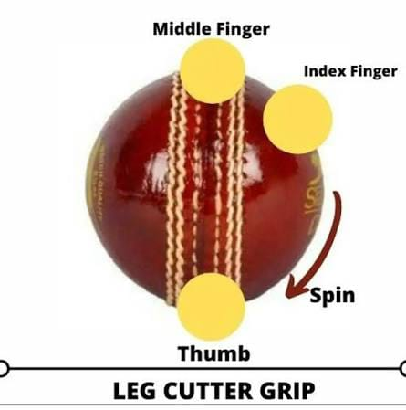
වේගපන්දු යවන්නන්ගේ අවි ගබඩාවේ ඇති අතිශයින්ම සූක්ෂ්ම සහ දකුණත් පිතිකරුවන්ට එරෙහිව දැඩි අභියෝගයක් එල්ල කරන මන්දගාමී පන්දු වර්ගයකි. පන්දුව නිකුත් කරන ක්ෂණික මොහොතේ දබරැඟිල්ල සහ මාපටැඟිල්ල මඟින් පන්දුවේ මැහුම මතින් (Across the seam) ඇතුළට සිට පිටතට අත හරවා කපා හැරීම (Cut) සිදු කරයි. මෙහිදී පන්දුව පිච් එකේ පතිත වීමෙන් පසු පිතිකරුවාගේ ශරීරය හෝ කඩුල්ල දෙසට ඇතුළට (Leg to off / Into the bat) හැරී යාම නිසා පිතිකරුවන්ගේ පිත්ත මඟහැරී පැඩ් එකේ වැදී LBW වීමෙන් හෝ කඩුල්ලේ වැදී (Bowled) දැවී යාමට ඉඩ සැලසේ.
ජාත්යන්තර තාක්ෂණික පියවර (Technical Execution)
1.
මැහුම හරස් අතට ග්රහණය කර ගැනීම (Cross-seam Grip):
පන්දුවේ මැහුම ඇඟිලිවලට හරස් වන සේ තබා ගනිමින්, දබරැඟිල්ල සහ මැදැඟිල්ල පන්දුවේ වම්පස කොටසින් තදින් අල්ලා ගත යුතුය.
2.
ඇඟිලි තුඩුවලින් ඇතුළට කපා හැරීම (Inner Seam Cutter Action):
පන්දුව නිකුත් කරන අවස්ථාවේදී මැණික් කටුව සහ දබරැඟිල්ල මඟින් පන්දුවට දකුණෙන් වමට (Clockwise) කැරකැවීමක් ලබා දෙමින් පන්දුව නිකුත් කළ යුතුය.
3.
නිවැරදි දිග සහ ඉලක්කය පාලනය (Length & Line Selection):
මෙම පන්දු බහුලවම Middle-stump හෝ Off-stump රේඛාවට Good-length කලාපයෙන් යොමු කිරීමෙන් පිතිකරුවාව දැඩි ලෙස අපහසුතාවයට පත් කළ හැක.
4.
නිරුපද්රිත ක්රියාකාරිත්වය (Disguise and Pace Reduction):
සාමාන්ය වේගවත් පන්දුවක් යවන ඉරියව්වෙන්ම පන්දු යවමින්, මඳක් වේගය අඩු කර පිතිකරුවාගේ Timing එක කඩාකප්පල් කිරීම මෙහි ප්රධාන අරමුණයි.
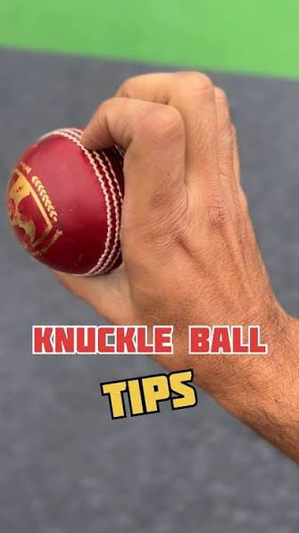
නවීන සීමිත පන්දු වාර (T20/ODI) ක්රිකට් ක්රීඩාවේ වේගපන්දු යවන්නන් සතු අතිශය සූක්ෂ්ම සහ මාරාන්තිකම මන්දගාමී පන්දු (Slower delivery) ක්රමවේදයකි. සාමාන්යයෙන් ඇඟිලි තුඩුවලින් පන්දුවට පීඩනය යොදා යැවීම වෙනුවට, දබරැඟිල්ලේ සහ මැදැඟිල්ලේ නකල් (Knuckles / පුරුක්) මඟින් පන්දුවේ මැහුම මත තබා, අතේ වේගය (Arm speed) කිසිදු වෙනසක් නොමැතිව ඉතා වේගයෙන් පන්දුව මුදා හැරීම මෙහිදී සිදු වේ. මෙහිදී වාතයේදී පන්දුවට භ්රමණයක් (Spin) නොමැති වීම නිසා වායුගෝලීය පීඩනය නිසා පන්දුව හදිසියේම වේගය අඩුවී (Dip/Slower trajectory) පිතිකරුවාගේ පහරදීම සම්පූර්ණයෙන්ම වැරදීමට සැලැස්වීම මෙහි ඇති විශේෂත්වයයි.
ජාත්යන්තර තාක්ෂණික පියවර (Technical Execution)
1.
ඇඟිලි පුරුක් ග්රහණය (Knuckle Finger Grip):
පන්දුවේ මැහුම දිගේ දබරැඟිල්ලේ සහ මැදැඟිල්ලේ මුල් පුරුකු (Knuckles) තබා, මාපටැඟිල්ලෙන් පන්දුව යටින් සැහැල්ලුවෙන් රඳවා ගත යුතුය (ඇඟිලි තුඩු පන්දුව ස්පර්ශ නොවේ).
2.
අතේ වේගය පවත්වා ගැනීම (High Arm Speed & Action):
පන්දු යවන්නා සාමාන්ය වේගවත් පන්දුවක් යවන ආකාරයටම (Full arm action) ඉතා වේගයෙන් අත ඉදිරියට ගෙන යා යුතුය. වේගය අඩුවීම පාලනය වන්නේ ඇඟිලි පුරුකලින් පන්දුව ලිස්සා යාමෙනි.
3.
භ්රමණයෙන් තොර පියාසැරිය (Zero Spin Trajectory):
පන්දුව නිකුත් කරන මොහොතේ ඇඟිලි තුඩුවලින් කිසිදු කැරකැවීමක් (Spin) ලබා නොදෙන බැවින්, පන්දුව වාතයේදී පාපන්දු බෝලයක් මෙන් කිසිදු භ්රමණයකින් තොරව (Floating/Floating movement) ගමන් කරයි.
4.
නිවැරදි දිග සහ ඉලක්කය (Length Targeting for Wickets):
මෙම පන්දුව බහුලවම Full-length (Yorker උත්සාහයක් ලෙස) හෝ Good-length කලාපයට යොමු කිරීමෙන්, පිතිකරුවා කලින්ම පහර දීමට ගොස් (Early shot) උඩපන්දුවක් ලෙස හෝ කඩුල්ලේ වැදී දැවී යාමට සැලැස්විය හැක.
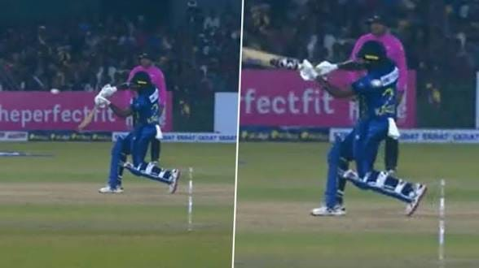
ක්රිකට් ක්රීඩාවේදී බිම පතිත වීමකින් තොරව (No bounce) කෙළින්ම පිතිකරුවාගේ ඉණෙන් ඉහළ මට්ටමකට (Waist-high or above) පැමිණෙන පන්දුවක් **බීමර් (Beamer)** ලෙස හැඳින්වේ. මෙය සාමාන්යයෙන් පන්දු යවන්නාගේ අතින් පන්දුව ලිස්සා යාම (Slipping from the hand) නිසා අත්වැරදීමකින් සිදුවන්නකි. පිතිකරුවන්ගේ ආරක්ෂාවට දැඩි තර්ජනයක් වන බැවින්, අන්තර්ජාතික ක්රිකට් කවුන්සිලයේ (ICC) නීතිවලට අනුව බීමර් පන්දු යැවීම දැඩි ලෙස තහනම් කර ඇති අතර ඒවා **No-ball** ලෙස නම් කරනු ලැබේ.
ජාත්යන්තර තාක්ෂණික හා නීතිමය පියවර (Technical & Regulatory Aspects)
1.
සිදුවීමට හේතු සහ යාන්ත්රික දෝෂ (Mechanical Causes & Slippage):
තෙතබරිත පන්දු තත්ත්වයන් (Dew/Sweat), අතේ දහඩිය හෝ පන්දු ග්රහණය කරගැනීමේදී ඇඟිලි ලිස්සා යාම නිසා පන්දු යවන්නාට ඉලක්කය පාලනය කරගත නොහැකි වීමෙන් මෙය සිදුවේ.
2.
පිතිකරුවාගේ ආරක්ෂාව සහ ප්රතිචාරය (Batsman Safety & Evasion):
ඉහළ වේගයෙන් පැමිණෙන බීමර් පන්දුවක් හමුවේ පිතිකරුවාට තම හිස සහ ශරීරය ආරක්ෂා කර ගැනීමට (Duck or evade) සිදුවන බැවින්, එය පිතිකරුවන්ට බරපතල තුවාල සිදු විය හැකි අවස්ථාවකි.
3.
අම්පාරතුමාගේ නීතිමය ක්රියාමාර්ග (Umpire Penalties & Warnings):
නීති රීතිවලට අනුව, උරහිස් මට්ටමට වඩා පහළින් එන පළමු බීමර් පන්දුවට නිල නිවේදනයක් (Official warning) ලබා දෙන අතර, උරහිස් මට්ටමට වඩා ඉහළින් එන හෝ නැවත නැවතත් බීමර් පන්දු යවන පන්දු යවන්නන්ට තරඟයෙන් ඉවත් වීමට (Suspension from bowling) පවා සිදුවිය හැක.
4.
පන්දු යවන්නෙකුගේ පාලනය (Bowling Control & Technique):
මෙම තත්ත්වයන් මඟහරවා ගැනීම සඳහා පන්දු යවන්නන් තෙතබරිත තත්ත්වයන් යටතේ පන්දුව පිරිසිදුව තබා ගැනීමට තුවා (Towels) භාවිතා කිරීම සහ ග්රහණය පාලනය කරගැනීම අත්යවශ්ය වේ.
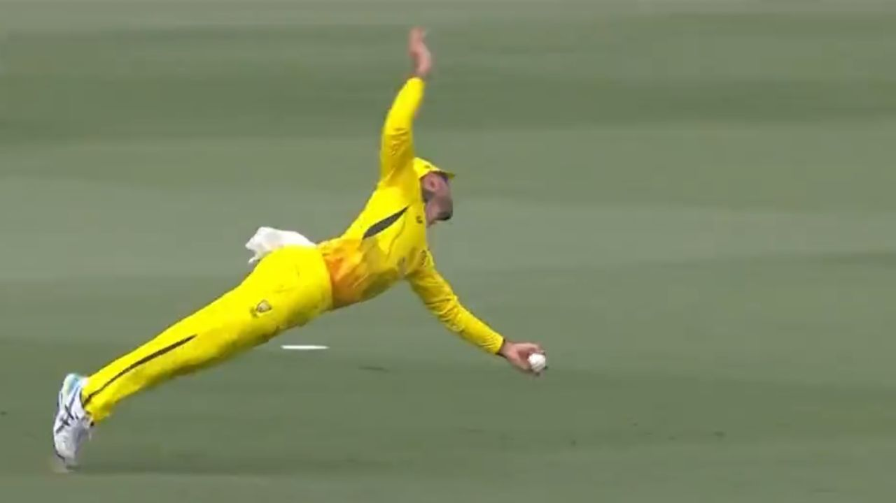
සීමිත ඕවර සහ ටෙස්ට් ක්රිකට් ක්රීඩාවේ තරඟයක ජයග්රහණය වෙනස් කළ හැකි අතිශය තීරණාත්මක පන්දු රැකීමේ (Fielding) කුසලතාවයකි. දිගු දුරක් (Boundary line හෝ Deep mid-wicket/Long-on/Long-off) ඉහළින් වේගයෙන් පැමිණෙන පන්දුවක් දෙස ඇස් යොදා ගනිමින්, නිවැරදි ස්ථානයට දුව ගොස් ශරීරයේ සමබරතාවය ආරක්ෂා කර ගනිමින් උඩපන්දුවක් රැක ගැනීම මෙහිදී සිදුවේ. සීමාව අසලදී (Boundary ropes) පන්දු රකින විට කකුල වැදීමෙන් හතරේ සීමාව ස්පර්ශ නොවී උඩපන්දුව රැකගැනීම අතිශය විශේෂඥ දැනුමක් අවශ්ය වන කරුණකි.
ජාත්යන්තර තාක්ෂණික පියවර (Technical Execution)
1.
පන්දුවේ ගමන් මඟ තක්සේරු කිරීම (Tracking the Ball):
පිතිකරුවා පහර දුන් වගුරුවන මොහොතේ සිටම පන්දුව වාතයේ ගමන් කරන දිශාව සහ වේගය නිරීක්ෂණය කර කඩිනමින් එම ස්ථානය කරා ගමන් කළ යුතුය.
2.
අත් සහ ඇස් සම්බන්ධීකරණය (Cup-shaped Hands & Soft Landing):
පන්දුව අතට ළඟා වන විට දෑත් බඳුනක හැඩයට (Cup shape) තබා ගනිමින්, පන්දුවේ වේගය පාලනය කර ගැනීමට දෑත් මඳක් පස්සට ගනිමින් (Soft hands absorption) උඩපන්දුව ආරක්ෂිතව අල්ලා ගත යුතුය.
3.
සීමාව අසල පාලනය සහ සමබරතාවය (Boundary Awareness & Balance):
රොප් එකට (Boundary rope) ආසන්නයේ පන්දු රකින විට, උඩපන්දුව අල්ලා ගන්නා මොහොතේ ශරීරයේ බර පාලනය කර ගනිමින් නැතහොත් පන්දුව සමඟම පිටතට යාමෙන් වැළකී සිටීමට අවශ්ය පාදවල ස්ථාවරත්වය පවත්වා ගත යුතුය.
4.
උසස් මට්ටමේ උඩපන්දු සහ රිලේ උත්සාහයන් (Relay Catch Execution):
සීමාවෙන් ඔබ්බට යන පන්දුවක් නම්, එය අල්ලා ගෙන බිම පතිත වීමට පෙර ක්රීඩා පිටිය ඇතුළට සිටින වෙනත් ක්රීඩකයෙකු වෙත පන්දුව විසි කිරීම (Relay catch) වැනි නවීන උපායමාර්ග භාවිතා කළ යුතුය.
ක්රිකට් ක්රීඩාවේ පන්දු රැකීමේ (Fielding) ඇති අතිශය දුෂ්කර සහ ආකර්ෂණීයම කුසලතාවයකි. පිතිකරුවා පහර දුන් පසු පන්දුව වැටෙන නිශ්චිත ස්ථානය (Trajectory) තක්සේරු කරමින්, දුවන අතරතුරදී සිය ඇස් පන්දුවෙන් ඉවතට නොගෙන (Keeping eyes on the ball) ආරක්ෂිතව උඩපන්දුවක් අල්ලා ගැනීම මෙහිදී සිදුවේ. වේගයෙන් දුවන විට ශරීරයේ සහ හිසෙහි සමබරතාවය පවත්වා ගැනීම මෙම උඩපන්දුව සාර්ථක කර ගැනීමට අත්යවශ්ය වේ.
ජාත්යන්තර තාක්ෂණික පියවර (Technical Execution)
1.
පන්දුව දෙසම ඇස් රඳවා ගැනීම (Eyes Fixed on the Ball):
දුවන අවස්ථාව පුරාම පන්දුවේ ගමන් මඟ නිරීක්ෂණය කරමින්, බිම නොබලා නිරන්තරයෙන්ම පන්දුව දෙසම අවධානය යොමු කළ යුතුය.
2.
ශරීරයේ සහ හිසෙහි ස්ථාවරත්වය (Head & Body Balance):
අධික වේගයෙන් දුවන විට හිස පාලනයකින් තොරව සැලීමෙන් වැළකී, දෑත් පන්දුව අල්ලන මට්ටමට සූදානම් කර තබාගත යුතුය.
3.
අවසාන පියවර පාලනය සහ අල්ලා ගැනීම (Cushioning the Catch):
පන්දුව ළඟා වන මොහොතේදී දුවන වේගය මඳක් පාලනය කර ගනිමින්, පන්දුව අතට වැදුණු වහාම දෑත් මඳක් පස්සට ගෙන කම්පනය අවම කර (Soft hands) උඩපන්දුව ස්ථිර කරගත යුතුය.
4.
පසුපසට දිවීමේදී ආරක්ෂාව (Over-the-shoulder Technique):
පන්දුව උඩින් යන විට උරහිස උඩින් පන්දුව දෙස බලමින් පසුපසට (Over-the-shoulder running) දුව ගොස් උඩපන්දු රැකීමේ විශේෂ පුහුණුවක් ලබා තිබිය යුතුය.
ක්රිකට් ක්රීඩාවේ පන්දු රැකීමේ (Fielding) ඇති අතිශය වික්රමාන්විත සහ ප්රේක්ෂකයින් වශී කරවන මට්ටමේ උසස් කුසලතාවයකි. සාමාන්යයෙන් දිව ගොස් ළඟා විය නොහැකි තරම් ඈතින් (Slips, Point, Cover හෝ Boundary line) පන්දුව ගමන් කරන විට, ක්රීඩකයා තත්පරයෙන් පංගුවක් ඇතුළත ක්ෂණිකව තීරණය ගෙන මුළු ශරීරයම වාතයට මුදා හරිමින් (Full stretch dive) උඩපන්දුව අල්ලා ගැනීම මෙහිදී සිදු වේ. මෙහිදී පන්දුව අල්ලා ගැනීමට මෙන්ම බිම පතිත වන විට ශරීරයට ආබාධ සිදු නොවී ආරක්ෂිතව වැටීමද (Safe landing) අතිශය තීරණාත්මක වේ.
ජාත්යන්තර තාක්ෂණික පියවර (Technical Execution)
1.
ක්ෂණික ප්රතිචාරය සහ තල්ලුව (Anticipation & Explosive Push-off):
පිත්තෙන් පන්දුව පිටවන ක්ෂණික මොහොතේම පන්දුවේ කෝණය හඳුනාගෙන, ආසන්නතම පාදයෙන් (Lead foot) බිමට තදින් තල්ලුවක් ලබා දෙමින් වාතයට පැන නැගිය යුතුය.
2.
ශරීරය සම්පූර්ණයෙන් දිග හැරීම (Full Body Extension):
වාතයේ සිටින අතරතුර මුළු ශරීරයම සහ දෑත් පන්දුව දෙසට උපරිමයෙන් දිග හරිමින් (Fully extended fingers), පන්දුවට ස්පර්ශ වීමට ඇති ඉඩකඩ වැඩි කරගත යුතුය.
3.
පන්දුව ස්ථිරව ග්රහණය කිරීම (Securing the Ball):
දෑත් එක් කරමින් පන්දුව අත්ල තුළට ගෙන (Cup shape), බිම වැදීමට පෙර පන්දුව ගිලිහී යා නොදී ඇඟිලි තද කර තබාගත යුතුය.
4.
ආරක්ෂිතව බිම පතිත වීම (Roll and Safe Landing):
බිම පතිත වන විට වැලමිට හෝ උරහිස මත කෙළින්ම පතිත නොවී, ශරීරය මඳක් පෙරලමින් (Roll) කම්පනය මුළු ශරීරයටම බෙදා හැර තුවාල වීම් (Shoulder/Wrist injuries) වළක්වා ගත යුතුය.
ක්රිකට් ක්රීඩාවේ විශේෂයෙන්ම ස්ලිප් (Slips), ගලි (Gully) සහ කඩුලු රකිනකරු (Wicket-keeper) කලාපවල ක්රීඩකයන් ප්රගුණ කළ යුතුම අතිශය සියුම් සහ අසීරු පන්දු රැකීමේ කුසලතාවයකි. පිතිකරුවාගේ පිත්තේ දාරයේ වැදී බිම පතිත වීමට ආසන්නව (Shoestring level) වේගයෙන් පැමිණෙන පන්දුවක්, අත්ල බිමට සමාන්තරව තබා ගනිමින් සහ ඇඟිලි යටට හරවමින් රැක ගැනීම මෙහිදී සිදු වේ. මෙහිදී අත් සහ ඇස් අතර සම්බන්ධීකරණය (Hand-eye coordination) මෙන්ම ශරීරයේ බර ඉදිරි පාදය මත තබා ගැනීම අතිශය තීරණාත්මක වේ.
ජාත්යන්තර තාක්ෂණික පියවර (Technical Execution)
1.
ශරීරය බර පහළට ගැනීම සහ දණහිස් නැවීම (Low Base & Knee Flexion):
පන්දුව එන මොහොතේ මුළු ශරීරයේම බර ඉදිරි පාදවලට ගනිමින්, දණහිස් දෙක හොඳින් නමා (Low center of gravity) ශරීරය බිමට සමීප කරගත යුතුය.
2.
ඇඟිලි ඉදිරියට සහ අත්ල පහළට හැරවීම (Fingers Forward & Palms Underneath):
අත් උඩට හැරවීම වෙනුවට, ඇඟිලි ඉදිරියට දිගු කරමින් සහ අත්ල පන්දුවට යටින් තබා ගනිමින් (Scooping motion) පන්දුව බිම ස්පර්ශ වීමට පෙර අල්ලා ගත යුතුය.
3.
හිස පන්දුවට ඉහළින් තබා ගැනීම (Head Position Over the Ball):
පන්දු රකින්නාගේ මුහුණ සහ ඇස් නිරන්තරයෙන්ම පන්දුවට කෙළින්ම ඉහළින් (Head directly over the ball) පිහිටිය යුතු අතර, දෑස් බිම නොබලා පන්දුව දෙසම දැඩි ලෙස අවධානය යොමු කළ යුතුය.
4.
මෘදු දෑත් භාවිතය (Soft Hands Absorption):
පන්දුව වේගයෙන් පැමිණෙන විට දෑත් තද කර නොගෙන (Soft hands), පන්දුව අත්ලට වැදුණු විගස දෑත් මඳක් ඉහළට හෝ පස්සට ගනිමින් කම්පනය අවම කරගත යුතුය.
ක්රිකට් ක්රීඩාවේ පන්දු රැකීමේ (Fielding) ඇති අතිශය තීරණාත්මක මෙන්ම ස්නායු පරීක්ෂා කරන උඩපන්දු රැකීමේ කුසලතාවයකි. පිතිකරුවා ඉහළට (Skyer) පහර දුන් විට, පන්දුව වාතයේ වැඩි කාලයක් ගත කරන බැවින් පන්දු රකින්නාට මානසිකව අවධානය පවත්වා ගැනීම සහ නිවැරදි ස්ථානයට වේලාසනින් ගමන් කිරීම අත්යවශ්ය වේ. පන්දුව අතට ළඟා වන තෙක් ඇස් පන්දුවෙන් ඉවතට නොගැනීම සහ දෑත්වල කම්පනය අවම කර ගැනීම මෙහි සාර්ථකත්වයේ රහස වේ.
ජාත්යන්තර තාක්ෂණික පියවර (Technical Execution)
1.
නිවැරදි ස්ථානය කල් තියා තෝරා ගැනීම (Early Positioning):
පන්දුව ඉහළට යන මොහොතේ සිටම එහි ගමන් මඟ නිරීක්ෂණය කර, පන්දුව බිමට වැටෙන නිශ්චිත ස්ථානයට (Underneath the ball) කඩිනමින් දුව ගොස් පාද ස්ථාවර කරගත යුතුය.
2.
අත් සහ ඇස් සම්බන්ධීකරණය (Cup Shape & Soft Hands):
පන්දුව මුහුණට මඳක් ඉහළින් හෝ පපුව මට්ටමේදී අල්ලා ගැනීම සඳහා දෑත් බඳුනක හැඩයට (Cup-shape with index fingers and thumbs touching) සූදානම් කර තබාගත යුතුය.
3.
අවසාන මොහොතේ පන්දුව දෙසම බලා සිටීම (Keeping Eyes on the Ball):
පන්දුව අතට වැදෙන ක්ෂණික තත්පරය දක්වාම දෑස් පන්දුව මතම රඳවා තබා ගත යුතු අතර, අවට ක්රීඩකයන් හෝ ප්රේක්ෂකාගාරය දෙස බැලීමෙන් අවධානය ගළවා නොගත යුතුය.
4.
පන්දුවේ වේගය අවම කර ගැනීම (Absorption and Cushioning):
ඉහළ සිට වේගයෙන් වැටෙන පන්දුවේ බර සහ වේගය පාලනය කිරීමට පන්දුව අත්ලට වැදුණු වහාම දෑත් මඳක් පහළට (Cushioning motion) ගෙන යා යුතුය.
06
Fielding Areas & Description
දකුණත් පිතිකරුවෙකු (Right-handed batter) පදනම් කරගෙන ක්රිකට් පිටිය ප්රධාන කොටස් දෙකකට බෙදේ: **Off Side** (පිතිකරුවාගේ ඉදිරිපස මුහුණත) සහ **On / Leg Side** (පිතිකරුවාගේ පසුපස/පිටුපස මුහුණත). පන්දු රැකීමේ ස්ථාන (Fielding Positions) ප්රධාන වශයෙන් කලාප 3කට වෙන් කරනු ලබයි: Close-in Infield (කඩුල්ලට ඉතා ආසන්න), Inner Ring (යාර 30 සීමාව ඇතුළත) සහ Outfield (සීමා මායිම ආසන්නය).
ප්රධාන පන්දු රැකීමේ ස්ථාන සහ තාක්ෂණික කලාප (Fielding Positions Breakdown)
1. කඩුල්ල පිටුපස සහ ස්ලිප් කලාපය (Behind the Wicket & Slips)
Wicket-keeper (WK): කඩුල්ල පිටුපස සිටින ප්රධාන පන්දු රකින්නා.
Slips (1st to 4th Slip): කඩුලු රකින්නාට එහා පැත්තෙන් Off-side එකට වන්නට පිතිකරුවාගේ දාරයේ වැදී එන පන්දු (Edges) රැකගැනීමට සිටින පන්දු රකින්නන්.
Gully: Slips සහ Point අතර කලාපයේ උඩපන්දු රැකගැනීමට සිටින ස්ථානය.
Leg Slip & Leg Gully: Leg-side එකේ කඩුල්ලට පිටුපසින් පිතිකරුවාගේ පැඩ් එකේ හෝ දාරයේ වැදී එන පන්දු සඳහා තබන ස්ථාන.
2. Off-Side කලාපය (Infield & Outfield)
Point: පිතිකරුවාගේ සිරස් අතට Off-side එකේ යාර 30 සීමාව තුළ පිහිටි ප්රධාන ස්ථානය.
Cover: Point සහ Mid-off අතර Cover drive පහරවල් වැළැක්වීමට තබන ස්ථානය.
Extra Cover: Cover සහ Mid-off අතර පිහිටි තවත් ආරක්ෂිත ස්ථානයක්.
Mid-off: පන්දු යවන්නාගේ Off-side පැත්තට වන්නට කඩුල්ලට ඉදිරියෙන් යාර 30 සීමාවේ පිහිටි ස්ථානය.
Third Man / Deep Third: කඩුල්ලට පිටුපසින් Off-side සීමා මායිම (Boundary) අසල පිහිටි ස්ථානය.
Deep Point / Deep Cover: Cover සහ Point රේඛාවේ සීමා මායිම (Outfield) අසල ස්ථාන.
Long-off: Mid-off එකට කෙළින්ම පිටුපසින් සීමා මායිම (Boundary) අසල පිහිටි ස්ථානය.
3. On / Leg-Side කලාපය (Infield & Outfield)
Square Leg: පිතිකරුවාගේ රේඛාවට කෙළින්ම Leg-side එකෙන් යාර 30 සීමාවේ පිහිටි ස්ථානය.
Mid-wicket: Square leg සහ Mid-on අතර පිතිකරුවාගේ ඉදිරිපස Leg-side යාර 30 සීමාවේ පිහිටි ස්ථානය.
Mid-on: පන්දු යවන්නාගේ Leg-side පැත්තට වන්නට කඩුල්ලට ඉදිරියෙන් යාර 30 සීමාවේ පිහිටි ස්ථානය.
Fine Leg / Deep Fine Leg: කඩුල්ලට පිටුපසින් Leg-side සීමා මායිම අසල පිහිටි ස්ථානය.
Deep Square Leg / Cow Corner: Leg-side පිටියේ සීමා මායිම අසල බලවත් පහරවල් නවත්වන ස්ථාන.
Long-on: Mid-on එකට කෙළින්ම පිටුපසින් සීමා මායිම (Boundary) අසල පිහිටි ස්ථානය.
4. ආසන්න පන්දු රැකීමේ තාක්ෂණික පාරිභාෂික වචන (Terminology & Close-in)
Silly (Silly Point / Silly Mid-off / Silly Mid-on): පිතිකරුවාට ඉතාම ආසන්නයෙන් (මීටර් කිහිපයක් ඇතුළත) පන්දු රැකීමට තබන අතිශය අවදානම් සහිත ස්ථාන.
Short (Short Leg / Short Mid-wicket): පිතිකරුවාට ආසන්නයෙන් Infield එක තුළ පන්දු රකින ස්ථාන.
Deep: යාර 30 සීමාවෙන් ඔබ්බට සීමා මායිම (Boundary rope) ආසන්නයේ ඇති ඕනෑම ස්ථානයක්.
Backward / Forward: පිතිකරුවාගේ Crease (සීමා රේඛාව) එකෙන් පිටුපසට වන්නට (Backward) හෝ ඉදිරියට වන්නට (Forward) පිහිටි ස්ථාන.
Pro Tip:
නායකයෙකු (Captain) විසින් පන්දු රකින්නන් ස්ථානගත කිරීමේදී පන්දු යවන්නාගේ ශෛලිය (Fast/Spin), පිතිකරුවාගේ ප්රබල පහරවල් එල්ල කරන කලාප (Strengths) සහ තරඟ ආකෘතිය (Test/T20) අනුව මෙම Fielding Positions නිරන්තරයෙන් වෙනස් කරනු ලබයි.